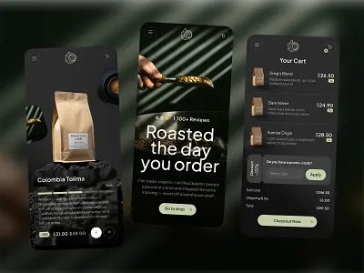

Coffee Shop eCommerce Mobile App UI Design
by Nixtio
电商 · 移动AppE-commerce · Mobile App
深色高端咖啡电商 App：商品页用"Roasted the day you order"讲烘焙故事、购物车里内嵌优惠码行、结账按钮常驻不消失；内容型电商可以借鉴这种把编辑感商品 Hero 嵌进购买流的做法。Dark, premium coffee-commerce app: "Roasted the day you order" product storytelling, a promo-code row inside the cart, and a persistent checkout CTA — a case for embedding editorial product heroes into the purchase flow.